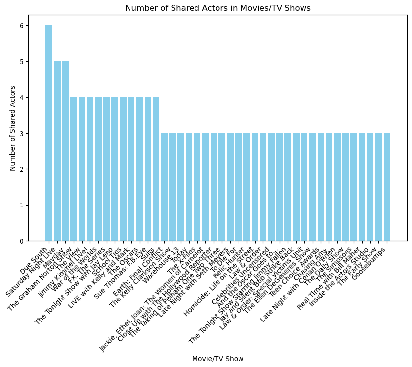
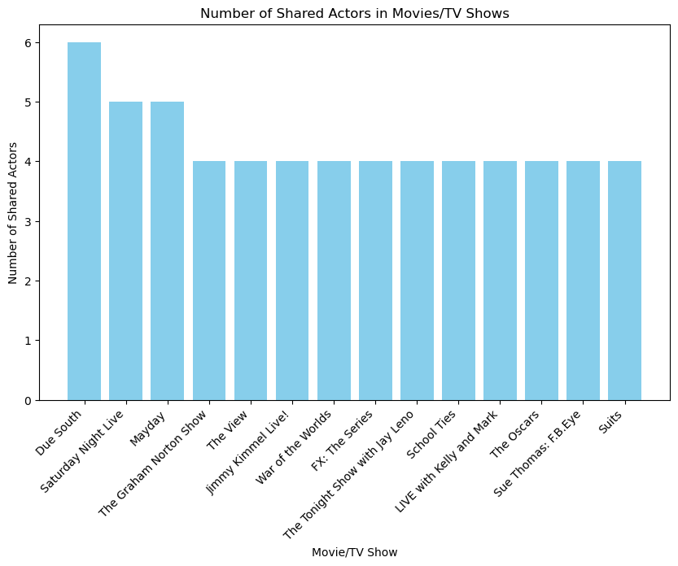

def parse(self, response):
"""
Navigate to the Full Cast & Crew page and call parse_full_credits.
Args:
response (scrapy.http.Response): The response object for the movie page.
Yields:
scrapy.Request: Request to the Full Cast & Crew page.
"""
cast_url = f"{response.url}/cast"
yield scrapy.Request(cast_url, callback=self.parse_full_credits)
Introduction:
In this blog post, I will walk you through the process of creating an web scraper designed to explore movie recomendations based on your favorite movie. This python web scraper collects movie recomendations by extracting information about movie casts from TMDB. The goal is to extract data on actors, movies, and their relationships to build a simple movie recommendation system based on shared actors.
First we must set up the project files in the terminal using:
conda activate PIC16B-24W
scrapy startproject TMDB_scraper
cd TMDB_scraperNow we must create a tmdb_spider.py file in the spiders file for our scraper class.
Understanding the Scraper
The web scraper is designed to collect data from The Movie Database (TMDb). It is designed as a class called TmdbSpider in the tmbd_spider.py file containing four methods: init, parse, parse_full_credits, parse_actor_page. To scrape the necessary information from each page we have to use css commands to extract information from the html of the given url.
parse()
This method initiates the scraping process by navigating to the Full Cast & Crew page of a movie. It then calls the parse_full_credits() method to extract actor information.
parse_full_credits()
This method parses the Full Credits page for the given movie, extracting actor names and their profile page URLs. It yields requests to scrape each actor’s page using the parse_actor_page() method while passing along the actor name. This method scrapes information specifically from the left panel of the page because we want to only include actors and exclude crew, producers, etc.
def parse_full_credits(self, response):
"""
Parse the Full Credits page for a movie, extract actor names and their respective profile page URLs,
and yield requests to scrape each actor's page.
Args:
response (scrapy.http.Response): The response object for the Full Credits page.
Yields:
scrapy.Request: Request to the actor's page.
"""
# selects the lines containing the actor url's and their names
actor_selectors = response.css('div.content_wrapper.false section.panel.pad:first-child div.info a[href^="/person/"]')
# Loops through the list of actor information
for actor_selector in actor_selectors:
# Extracts actor names and actor url
actor_name = actor_selector.css('::text').extract_first()
actor_page_url = urljoin(response.url, actor_selector.css('::attr(href)').extract_first())
# Debug information
#self.logger.info(f'Actor Name: {actor_name}, Actor Page URL Relative: {actor_page_url_relative}')
# Debug information
#self.logger.info(f'Actor Page URL: {actor_page_url}')
yield scrapy.Request(actor_page_url, callback=self.parse_actor_page, meta={'actor_name': actor_name})
parse_actor_page()
This method parses an actor’s profile page, extracting movie titles and their URLs. It yields information about the actor and the associated movie or TV show. This method scrapes information specifically from the Actor table of the page because we want to only include acting roles and exclude any other roles.
def parse_actor_page(self, response):
"""
Parse an actor's profile page, extract movie titles and their respective URLs,
and yield information about the actor and the associated movie.
Args:
response (scrapy.http.Response): The response object for the actor's profile page.
Yields:
dict: Information about the actor and the associated movie.
"""
actor_name = response.meta.get('actor_name')
# Extracting movies from lines like '<a class="tooltip" href="/movie/1236045">
# <bdi>Animals</bdi>'
# </a>
h3_cat = response.css('div.credits_list')[0].css('h3::text').getall()
num = h3_cat.index("Acting")
movie_selectors = response.css('div.credits_list')[0].css('table.card.credits')[num].css('a.tooltip')
for movie_selector in movie_selectors:
# Extract movie title
movie_title = movie_selector.css('bdi::text').extract_first().strip()
# Extracting movie URL
movie_url_relative = movie_selector.css('::attr(href)').extract_first()
# Join the relative URL with the base URL of the current page
movie_url = response.urljoin(movie_url_relative)
'''
if movie_url + '-' + convert_to_slug(movie_title) == self.start_urls:
self.logger.info(f'Skipping movie: {movie_title} (same as original)')
continue
'''
# Debug information
#self.logger.info(f'Movie Title: {movie_title}')
#self.logger.info(f'Movie URL: {movie_url}-{convert_to_slug(movie_title)}')
if movie_title and movie_url:
yield {"actor": actor_name, "movie_or_TV_name": movie_title}
else:
# If movie_title or movie_url is not present, log a warning
self.logger.warning('Movie title or URL not found in the selector')
To run the scraper, use the following command in the terminal:
scrapy crawl tmdb_spider -o results.csv -a subdir=489-good-will-hunting
Where we replace the subdir parameter with the movie’s subdir you want to start the scraping process from. You can find the subdir by checking the url of the TMBD page for the movie you want recomendations from.
Now we are returned a results.csv file containing the recomendations gathered from the parsing of the page.
Results and Analysis
From the results.csv we want to extract the recomended movies. Logically, the best recomendations will be those with the most number of shared actors from the original movie. We can see below that the csv has two columns, actor, and movie_or_TV_name, so we want to reorganize the dataframe so that it combines repetitions of the same movie and counts the number of shared actors.
# import the necessary libraries
import numpy as np
import pandas as pddf = pd.read_csv("goodwillhunting_recs.csv")
df| actor | movie_or_TV_name | |
|---|---|---|
| 0 | Patrick O'Donnell | 2 By 4 |
| 1 | Patrick O'Donnell | Good Will Hunting |
| 2 | Scott William Winters | A Little Dream |
| 3 | Scott William Winters | Narcos: Mexico |
| 4 | Scott William Winters | Beautifully Broken |
| ... | ... | ... |
| 1500 | Robin Williams | The Tonight Show Starring Johnny Carson |
| 1501 | Robin Williams | The Grammy Awards |
| 1502 | Robin Williams | Tony Awards |
| 1503 | Robin Williams | The Oscars |
| 1504 | Robin Williams | Today |
1505 rows × 2 columns
print(df.shape)(1505, 2)In order to reorganize the dataframe I have created a function called create_shared_actors_df. It takes the DataFrame obtained from the scraper as input and generates a new DataFrame with information about shared actors for each movie. The resulting DataFrame is sorted in descending order based on the number of shared actors.
def create_shared_actors_df(input_df):
"""
Create a DataFrame with information about shared actors for each movie.
Args:
input_df (pd.DataFrame): The input DataFrame containing actor and movie information.
Returns:
pd.DataFrame: A new DataFrame with columns for movie, num_shared_actors, and shared_actors,
sorted in descending order based on the number of shared actors.
"""
# Create an empty list to store dictionaries
result_data = []
# Iterate over unique movies in the input DataFrame
unique_movies = input_df['movie_or_TV_name'].unique()
for movie in unique_movies:
# Filter rows for the current movie
movie_rows = input_df[input_df['movie_or_TV_name'] == movie]
# Get unique actors for the current movie
unique_actors = movie_rows['actor'].unique()
# Find the number of shared actors
num_shared_actors = len(unique_actors)
# Append a dictionary to the result list
result_data.append({
'Movie/TV Show': movie,
'Number of Shared Actors': num_shared_actors,
'Shared Actors': unique_actors.tolist()
})
# Create a new DataFrame from the list of dictionaries
result_df = pd.DataFrame(result_data)
# Exclude the original movie since it will automatically have all of the actors as shared actors
result_df = result_df[result_df['Movie/TV Show'] != "Good Will Hunting"]
# Sort the DataFrame based on the number of shared actors in descending order
result_df = result_df.sort_values(by='Number of Shared Actors', ascending=False)
result_df = result_df.reset_index(drop=True)
return result_df# Example usage with the provided DataFrame df
result_df = create_shared_actors_df(df)
result_df.head()| Movie/TV Show | Number of Shared Actors | Shared Actors | |
|---|---|---|---|
| 0 | Due South | 6 | [Philip Williams, James Allodi, David Eisner, ... |
| 1 | Saturday Night Live | 5 | [Matt Damon, George Plimpton, Casey Affleck, B... |
| 2 | Mayday | 5 | [Frank Nakashima, Bruce Hunter, Barna Moricz, ... |
| 3 | The Graham Norton Show | 4 | [Matt Damon, Minnie Driver, Ben Affleck, Robin... |
| 4 | The View | 4 | [Matt Damon, Minnie Driver, Ben Affleck, Robin... |
Visualization:
To visualize the number of shared actors between movies, you can use tools like Matplotlib, plotly, or seaborn in Python. The visualize_shared_actors function creates a visual representation of the number of shared actors in the recomended movies and TV shows using a bar chart from Matplotlib. The bar chart generated highlights movies or TV shows where multiple actors have collaborated, indicating potential relationships or thematic similarities between those productions and the original.
Also, the function includes a filter (df[‘Number of Shared Actors’] >= 3) to focus on movies or TV shows with a higher number of shared actors because there are over a thousand recomendations gathered by the scraper, many of which have no shared actors.
import matplotlib.pyplot as plt
def visualize_shared_actors(df, overlap):
"""
Visualize the number of shared actors in movies/TV shows using a bar chart.
Arguments:
df (pd.DataFrame): DataFrame containing columns 'Movie/TV Show' and 'Number of Shared Actors'.
Displays a bar chart.
"""
shared_df = df[df['Number of Shared Actors'] >= overlap]
# Create a bar chart
plt.figure(figsize=(10, 6))
plt.bar(x = shared_df['Movie/TV Show'], height = shared_df['Number of Shared Actors'], color='skyblue')
plt.title('Number of Shared Actors in Movies/TV Shows')
plt.xlabel('Movie/TV Show')
plt.ylabel('Number of Shared Actors')
plt.xticks(rotation=45, ha='right')
# Display the table
plt.show()Here is a visualization of the shared actors recomendation data using the visualize_shared_actors function:
# Visualize shared actors for movies with two or more shared actors
visualize_shared_actors(result_df, 3)
# Visualize shared actors for movies with two or more shared actors
visualize_shared_actors(result_df, 4)
The top movie/tv show recomendations for Good Will Hunting are Due South, Mayday, and War of the Worlds. As we can see one issue that could possibly fixed in the future is exclusing talk shows.
Conclusion
In this tutorial, we’ve created a web scraper using Scrapy to extract movie information from TMDb in order to create a recomendation system. By understanding the html structure of the website and using Scrapy, we can gather valuable data for building a movie recommendation system. The visualization at the end allows us to analyze and identify actors with significant contributions to multiple movies for the best recomendations. To further enhance the recomendation system, you could limit the number of actors scraped to only the main cast of the show.